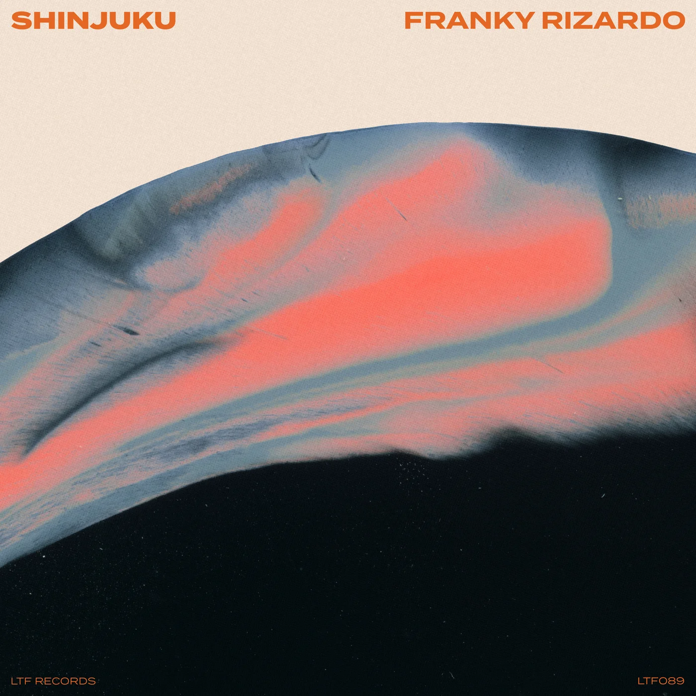

PRESS KIT OFICIAL
BΔUTISTA
House, Deep House, Tech House, Techno y Minimal con una propuesta elegante, hipnótica y enfocada en la pista.
Basado en Ciudad Juárez, Chihuahua, México
01
Sobre mí
BΔUTISTA es un DJ de Ciudad Juárez, Chihuahua, México, con 4 años de trayectoria dentro de la escena electrónica. Su propuesta artística se desarrolla entre el House, Deep House, Tech House, Techno y Minimal, construyendo sets con una identidad definida, una energía progresiva y una visión clara de pista.
Su estilo destaca por el dinamismo, la técnica y una selección musical cuidada, enfocada en generar sesiones envolventes, fluidas y auténticas. Cada presentación busca mantener una conexión constante con el público a través de transiciones limpias, narrativa sonora y una lectura precisa del ambiente.
02
Presentaciones
03
Track de la semana

Recomendación semanal
Shinjuku
Franky Rizardo
Un track seleccionado para compartir buena música y mantener viva la esencia del sonido que inspira esta semana.
04
Redes Sociales
“Una propuesta sonora que fusiona técnica, dinamismo y selección musical para crear una experiencia auténtica en la pista.”
05
Contacto
Booking
Brando Bautista
Ubicación
Ciudad Juárez, Chihuahua, México